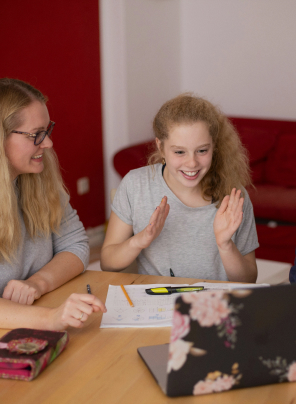
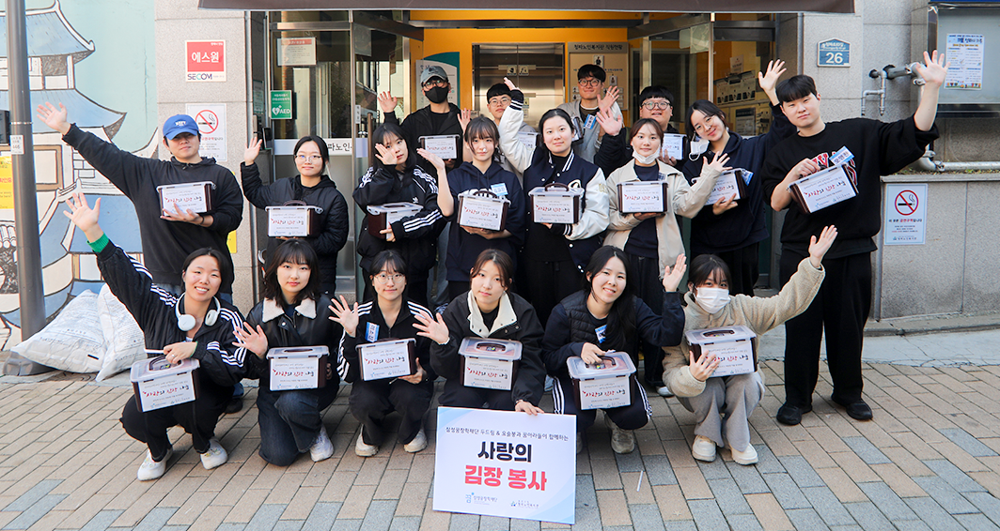

아이들의 꿈과 재능이 성장할 수 있도록
배움의 터전이 되어주도록 하겠습니다
Samsung Dream Scholarship Foundation
삼성꿈장학재단은
다양한 장학사업을 수행하고 있습니다
-

멘토링
꿈장학사업다양한 분야에 꿈과 가능성이 있는 청소년들이 멘토 선생님의 교육적, 정서적 지지를 받으면서 자신의 꿈을 찾고 재능을 개발할 수 있도록 장학금을 지원하는 사업
자세히 보기 -
리더육성
장학사업꿈장학생 가운데 학업역량 및 의지가 우수한 대학(원)생을 선발하여 사회의 각 분야에서 리더로 성장할 수 있도록 장학금과 교육 프로그램을 맞춤형으로 지원하는 사업
자세히 보기 -
배움터교육
지원사업교육지원이 부족한 아동 · 청소년을 위해 지역 배움터들이 협력하여 양질의 교육프로그램을 운영하고 교육복지 안전망을 구축할 수 있도록 지원하는 사업
자세히 보기 -
글로벌
장학사업역사적 상황으로 불가피하게 흩어진 한인후손과 개발도상국 아동 · 청소년과 대학(원)생을 지원하여 자국의 발전을 이끌 수 있는 글로벌 리더로 양성하는 사업
자세히 보기 -
희망나눔
장학사업대학 희망장학생들에게 꿈장학 학습멘토링, 배움터 교육지원, 문해멘토링, 캠퍼스 학내봉사 등의 국내봉사와 개발도상국 현지 배움터에서의 해외봉사를 경험할 수 있도록 지원하는 사업
자세히 보기 -
특별
지원사업재단 장학생들에게 다양한 기회를 제공하고 사회전반에 교육복지 인식을 확산하고자, 여러 기관들과 연계하여 더 많은 아이들에게 교육복지 혜택을 지원하는 사업
자세히 보기
장학재단 소식
장학사업과 재단의 주요 소식을 전해 드립니다.
장학재단 활동
-
멘토링 꿈장학사업
 멘토링 꿈장학사업
멘토링 꿈장학사업
꺾이지 않는 도전정신으로 그려낸 70개의 꿈
지난 11월 2일(토), 재단 꿈장학센터에서 ‘장학생·멘토와 함께하는 2024 꿈장학 공모전 시상식’이 열렸다. 이날 행사는 인사말씀과 수상자 시상, 심사 총평, 수상자 소감 발표, 최우수 영상 상영 순으로 진행됐으며, 재단의 정기영 이사와 우진중 사무총장, 신달자 심사위원장을 비롯해 멘토 선생님과 장학생 수상자, 가족 등이 함께했다.
-
배움터 교육지원사업
 배움터 교육지원사업
배움터 교육지원사업
경험을 나누며 ‘배움’을 함께 만들어가다
삼성꿈장학재단은 지난 10월 17일 대한상공회의소에서 ‘2024 배움터 교육지원사업 사례나눔 워크숍’을 진행했다. 이번 워크숍은 재단 이광호 이사의 인사말을 시작으로 개회 및 포럼, 2025년 배움터 교육지원사업 공모 안내, 사례나눔 및 워크숍 순으로 진행됐다.
-
 리더육성 장학사업리더육성 장학사업
배추 속까지 행복으로 꽉 채운 꿈아라들의 희망 한 포기를 담았다
지난 11월 9일 토요일, 삼성꿈장학재단의 대학 희망장학생 ‘꿈아라’ 40여 명이 서울 용산구에 위치한 한 복지관에서 김장봉사를 진행했다. 이번 봉사는 오전과 오후 두 차례로 나눠 이루어졌으며, 총 400포기의 김장김치를 담가 복지관 관내에 홀로 사시는 어르신들에게 전달했다. 아침 일찍부터 복지관에 모인 꿈아라들은 본격적인 김장봉사 전, 절임배추와 양념, 김장매트 등을 분주하게 옮기며 재료를 준비했고, 위생모와 마스크, 고무장갑과 우비를 착용한 채 파이팅을 외치며 누구보다 맛있는 김치를 만들겠다는 각오를 다졌다.
-
멘토링 꿈장학사업
 멘토링 꿈장학사업
멘토링 꿈장학사업
말할수록 선명해지는 우리들의 소중한 꿈 이야기
삼성꿈장학재단은 ‘2024년 꿈장학 진로발표대회’를 10월 26일 토요일에 재단 연수실에서 개최했다. 이번 대회는 스스로 진로 계획을 수립하고 발표하는 경험을 통해 장학생들에게 적극적인 진로탐색·개발과 표현의 기회를 제공하기 위해 마련됐으며, 서류 심사를 통과한 꿈장학생 23명이 발표자로 참여했다. 또한, 오정숙 교수(대구대학교)와 정경운 교수(전남대학교)가 심사를 맡아 진로 탐색·계획의 구체성, 발표능력, 발표태도, 성장가능성 등을 기준으로 평가했다.
-
배움터 교육지원사업배움터 교육지원사업
배움터 청소년 밴드가 직접 만들고 부르는 노래
삼성꿈장학재단은 ‘2024 배움터 청소년 창작곡 밴드대회’를 11월 2일 토요일에 서울생활문화센터 서교스퀘어에서 개최했다. 올해 처음 진행된 이 대회는 배움터 청소년 밴드팀의 성장을 확인하고 청소년 창작 문화의 확산에 기여하기 위해 마련됐으며, 전국 각지 배움터의 총 17개 밴드팀 중 1차 영상심사를 통과한 총 8개의 청소년 밴드팀이 자작곡을 가지고 참여했다. 또한, 심사위원으로 인디밴드 ‘브로콜리너마저’의 멤버 윤덕원 님과 정경운 전남대학교 교수가 참석해 가사 전달력, 곡의 정서, 팀워크 등을 기준으로 공정하게 평가했다.